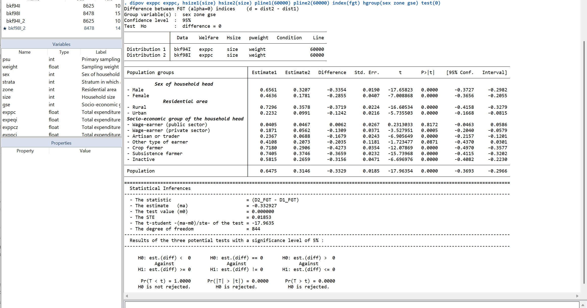

Packages
Complete methods, in the box
Two packages come with AURA, each with its commands, dialog boxes, help and user manual: DAAP for distributive analysis and SUBSIM for price reforms. Others install with one command.
DAAP · Distributive Analysis for AURA
Poverty and inequality, with their standard errors
DAAP measures poverty and inequality, compares distributions, draws curves and decomposes changes — with design-based standard errors and tests throughout. It carries the heritage of the DASP methods into an open, Python-native tool: the same rigor, none of the licence. Statistics → DAAP opens a dialog box for every command; daapmanual opens its user manual.

Poverty
FGT and EDE-FGT, Watts and Sen-Shorrocks-Thon indices, with fixed or relative lines; changes between two distributions; multidimensional, chronic and transient poverty.
Inequality
Gini and concentration, Atkinson and generalized entropy (Theil, mean log deviation); differences between distributions; Shapley decompositions by groups and by sources, and by regression.
Curves
Lorenz and concentration curves, FGT and poverty curves, densities, quantiles, non-parametric regression and growth incidence — with confidence bands.
Dominance
Poverty and inequality dominance between two distributions, and consumption-dominance curves for marginal tax and subsidy reforms.
Polarization
Duclos-Esteban-Ray, Foster-Wolfson and bipolarization indices, and their differences between distributions.
Pro-poor growth and progressivity
Was growth pro-poor? Are taxes and transfers progressive? Indices and curves.
Targeting and incidence
The impact of targeted transfers on poverty, and who benefits from public spending.
Means and shares
Means, proportions and income shares by group, and their differences between distributions.

SUBSIM · Simulating subsidy reforms
What a reform of prices and subsidies does to households
Declare the price schedules — blocks with increasing or volume-differentiated tariffs, a structure per block, a fixed fee, a schedule per group — set the items and the scenarios of the reform, and SUBSIM reports, for each item and scenario, the change in well-being, poverty, inequality, quantities and public revenue, by group. Statistics → SUBSIM opens its dialog boxes; subsimmanual its user manual.


Price schedules
pschset declares a schedule, from values or from variables of the data; pschdes describes it and draws its tariffs, the cost of a quantity and the average price.

Direct effects and compensation
subsim gives the tables of the reform, a summary with the transfer that keeps poverty at its level — to everyone or to a group —, ten figures, and an Excel workbook.

Indirect effects
A price shock spreads through an input-output table to every sector (pciom), in the short or the long run; subsim adds these indirect effects to the direct ones.
Measures of well-being
First order; second order — consumer surplus, equivalent and compensating variations, with matrices of price and income elasticities —; or the exact equivalent and compensating variations of a Cobb-Douglas or CES model.
More packages
Install, update — or publish your own
A package is a set of commands with their help, dialog boxes and menu entries. Point AURA to a repository, install, and the commands are there at once, with their entries in the menus. AURA keeps their versions and fetches the updates; Tools → Manage Packages lists them, turns them on or off, and browses a repository.
Publishing is as simple: put the package's files in a folder of a web repository, with its index, and share the address.
pkg from "https://…/my-repository" pkg list pkg install mypackage pkg check pkg update _all pkg uninstall mypackage